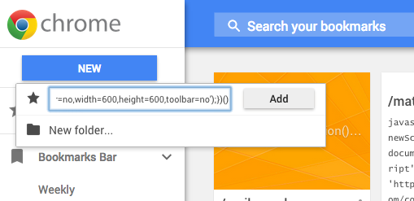
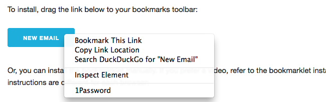
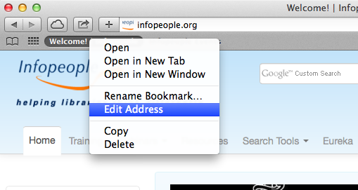
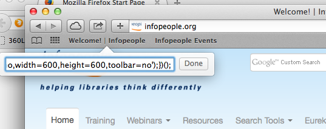

Or, you can install the bookmarklet manually. If you prefer a video, refer to the bookmarklet installation screencast for week two. The instructions are different for each browser:
Chrome
- In Chrome, click Bookmarks > Bookmark Manager
- You will see a new tab open with all of your bookmarks in it
- Click the blue "New" button in the left column
- Copy the JavaScript by right-clicking on the bookmarklet link and selecting 'Copy Link Location'
- Paste the code into the "URL" field.
- Click the gray "Add" button.

Firefox
- In Firefox, right-click on the bookmarklet link
- Select "Bookmark This Link"

- Type the name of your Bookmarklet in the "Name" field
- Click "Save"
3. Safari
Dragging the link to the bookmarks bar is the easiest way to do this in Safari. Otherwise we have to create a bookmark for something else, and then edit the URL to be the Javscript we want to run.
- In Safari, load any web page. We're use infopeople.org for this example. (You can't add a bookmark unless you're on a page already, it seems.)
- Select Bookmarks > Add Bookmark
- A little window will pop up. Select the folder or location where you want the bookmarklet (Use "Favorites Bar" for easy access.) Then type the name of your bookmarklet in the text field./li>
- Click "Add"
- Now right-click on bookmark you just created. You should see a menu pop up. Select "Edit Address
"

- You should now see a text box pop up under your bookmark
- Copy the JavaScript by right-clicking on the bookmarklet link and selecting "Copy Link"
- Paste the code into the text box
- Click the "Done" button.

4. Internet Explorer
Older versions of Internet Explorer don't support drag-and-drop bookmarks, so this might be your only option with IE.
- Make sure your favorites bar is visible. (Right-click on the menu bar and make sure "Favorites" is checked.)
- Right click on the bookmarklet link and choose "Add to Favorites"
- In the "Create In" field, choose "Favorites Bar"
- Click "Add"
- You should now have a bookmarklet link in your Favorites Bar